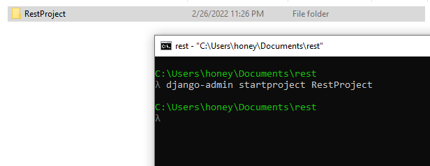
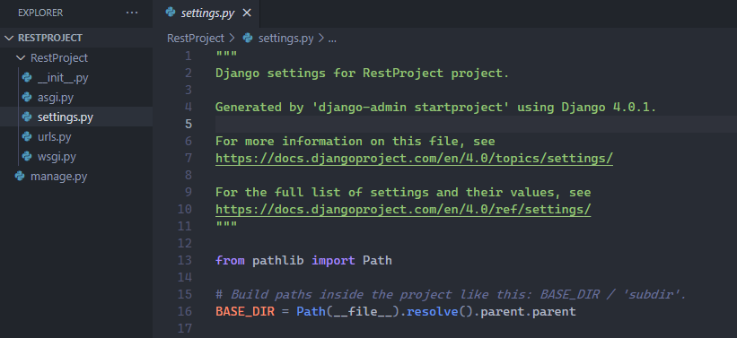
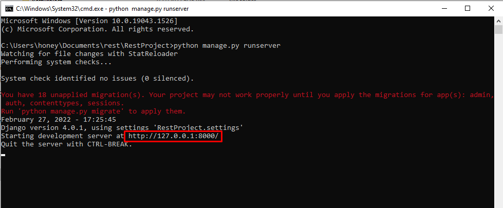
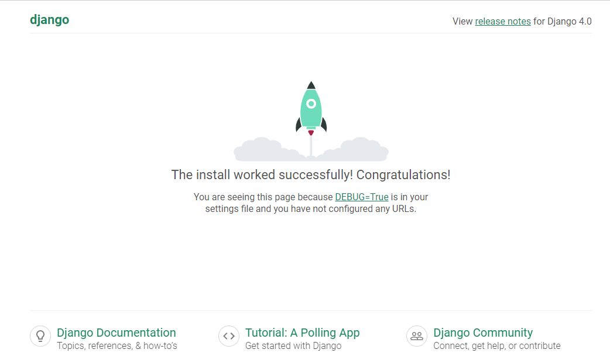
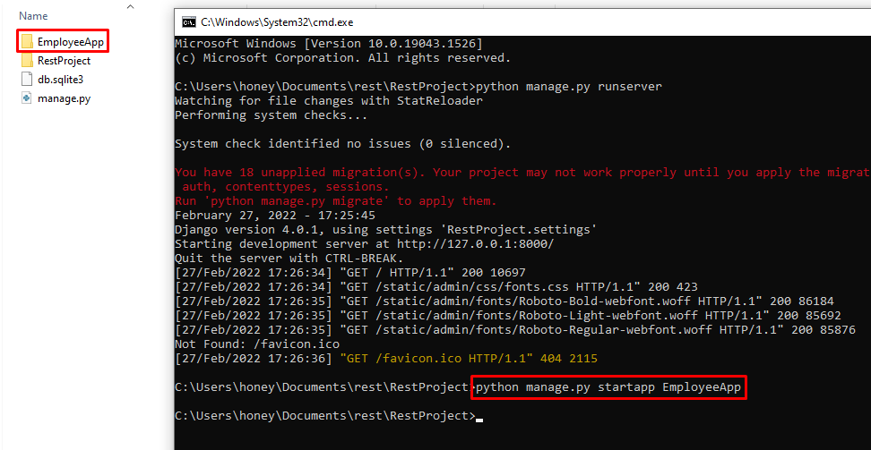
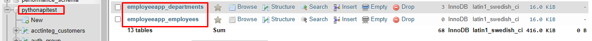

I am assuming that python is already installed on your system and "pip" command is working. If yes then the following steps should work:
1. Open your command prompt and execute command:
$> pip install django2. To create rest api we need to install django rest framework.
$> pip install djangorestframework3. By default the django project comes with a security that blocks request coming from different domains. To disable this lets install django cors headers module.
$> pip install django-cors-headers4. Now lets create a django project. Open the command prompt in desired folder and type command.
$> django-admin startproject RestProjectAfter execute above command a folder should create on the same directory names "RestProject"

5. Open that folder in VSCode or code editor of your choice. You will see file structure like following image.

__init__.py is just an empty file that indicates that the given folder is a python project or module
asgi.py is the entry point for the ASGI compatible web servers
settings.py contains all the settings and configurations needed for the project
urls.py contains all the url declarations needed for this project
wsgi.py is the entry point for the WSGI compatible web servers
manage.py is a command line utility that helps intract with django project
6. Now the project is setup, lets run the peoject to see how its look in the browser. Just type following command
$> python manage.py runserverand you will see the url where you django app is running.

copy that url and paste it to the browser, you will see a default django page like below

Now the django is running successfully on your system. Lets do the further things.
7. Create a app in your django project (The current folder structure which you see is a project but app is different than project. A project may have multiple apps in it). To create an app execute the following command.
$> python manage.py startapp EmployeeApp
8. Let us register the app in the required module in project's settings.py file. In the INSTALLED_APPS section lets add 'rest_framework', 'corsheaders' and 'EmployeeApp.apps.EmployeeappConfig'
INSTALLED_APPS = [
'django.contrib.admin',
'django.contrib.auth',
'django.contrib.contenttypes',
'django.contrib.sessions',
'django.contrib.messages',
'django.contrib.staticfiles',
'rest_framework',
'corsheaders',
'EmployeeApp.apps.EmployeeappConfig'
]
MIDDLEWARE section add 'corsheaders.middleware.CorsMiddleware'
MIDDLEWARE = [
'corsheaders.middleware.CorsMiddleware',
'django.middleware.security.SecurityMiddleware',
'django.contrib.sessions.middleware.SessionMiddleware',
'django.middleware.common.CommonMiddleware',
'django.middleware.csrf.CsrfViewMiddleware',
'django.contrib.auth.middleware.AuthenticationMiddleware',
'django.contrib.messages.middleware.MessageMiddleware',
'django.middleware.clickjacking.XFrameOptionsMiddleware',
]
We will also add instruction to enable all domains to access the API (This is not recommended in production instead just only those domains that need to be whitelisted)
CORS_ORIGIN_ALLOW_ALL = True9. Lets create models needed for our app. We are creating an EmployeeApp (for an example) for this we need two models: Departments (to store employee's department details) and Employees (to store employee details). Just edit the apps models.py file and insert the following code
from django.db import models
# Create your models here.
class Departments(models.Model):
DepartmentId = models.AutoField(primary_key=True)
DepartmentName = models.CharField(max_length=500)
class Employees(models.Model):
EmployeeId = models.AutoField(primary_key=True)
EmployeeName = models.CharField(max_length=500)
Department = models.CharField(max_length=500)
DateOfJoining = models.DateField()
PhotoFileName = models.CharField(max_length=500)
10. We will be using MySQL as the database to create the table from these models. Open your mysql databse and create a database named "pythonapitest" (you can create any name of your choice).
11. Now to connect MySQL from our django app we need to install database adapter. Lets install it with command:
$> pip install pymysql12. Let us now add the database connection details in the main settings.py file.
import pymysql
pymysql.install_as_MySQLdb()
DATABASES = {
'default': {
'ENGINE': 'django.db.backends.mysql',
'NAME': 'pythonapitest',
'USER': 'root',
'PASSWORD': '123456',
'HOST': 'localhost',
'PORT': '3306'
}
}
In python3 there is an issue with this mysql client so we have added pymysql.install_as_MySQLdb()
13. Now lets run the command to create migration file from our models
$> python manage.py makemigrations EmployeeAppafter executing this we can see a migration file 0001_initial.py under EmployeeApp -> migrations will be create which tells us that what changes to the database will be done. Once it looks fine we can execute the command to push these changes to the database
$> python manage.py migrate EmployeeAppafter execute the command check the tables created in the mysql database

14. Insert 1-2 records manually in the data tables.
15. Lets create serializers for our models. Serialziers basically help to convert the complex types or model instances into native python data types that can be easily rendered into json or xml or other content types. They also help in serialization which is nothing but converting the past data back to complex types. Add a new file serializers.py and add following code in it
from rest_framework import serializers
from EmployeeApp.models import Departments, Employees
class DepartmentSerializer(serializers.ModelSerializer):
class Meta:
model=Departments
fields=('DepartmentId', 'DepartmentName')
class EmployeeSerializer(serializers.ModelSerializer):
class Meta:
model=Employees
fields=('EmployeeId', 'EmployeeName', 'Department', 'DateOfJoining', 'PhotoFileName')
16. Lets now write the api methods as follows
from django.shortcuts import render
from django.views.decorators.csrf import csrf_exempt
from rest_framework.parsers import JSONParser
from django.http.response import JsonResponse
from EmployeeApp.models import Departments, Employees
from EmployeeApp.serializers import DepartmentSerializer, EmployeeSerializer
# Create your views here.
@csrf_exempt
def departmentAPI(request, id=0):
if request.method=='GET':
departments = Departments.objects.all()
departments_serializer = DepartmentSerializer(departments, many=True)
return JsonResponse(departments_serializer.data, safe=False)
elif request.method=='POST':
department_data = JSONParser().parse(request)
departments_serializer = DepartmentSerializer(data=department_data)
if departments_serializer.is_valid():
departments_serializer.save()
return JsonResponse("Added Successfully", safe=False)
return JsonResponse("Failed to Add", safe=False)
elif request.method=='PUT':
department_data = JSONParser().parse(request)
department=Departments.objects.get(DepartmentId=department_data['DepartmentId'])
departments_serializer=DepartmentSerializer(department, data=department_data)
if departments_serializer.is_valid():
departments_serializer.save()
return JsonResponse("Update Successfully", safe=False)
return JsonResponse("Failed to Update", safe=False)
elif request.method=='DELETE':
department=Departments.objects.get(DepartmentId=id)
department.delete()
return JsonResponse("Deleted Successfully", safe=False)
16. Add the url routes to urls.py
from django.urls import path
from EmployeeApp import views
urlpatterns=[
path('department', views.departmentAPI),
path('department/([0-9]+)', views.departmentAPI)
]
17. Next we need to include these urls into the main urls.py file
from django.contrib import admin
from django.urls import path, include
urlpatterns = [
path('admin/', admin.site.urls),
path('', include('EmployeeApp.urls')),
]
Now start the server and test the api end points as mentioned below. (You can use postman or any other api client
Request Type: GET, URL: http://127.0.0.1/department
Response:
[
{
"DepartmentId": 1,
"DepartmentName": "Accounts"
},
{
"DepartmentId": 2,
"DepartmentName": "IT"
}
]
Request Type: POST, URL: http://127.0.0.1/department
Request Body
{
"DepartmentName": "Sales"
}
Response
"Added Successfully"
Request Type: PUT, URL: http://127.0.0.1/department
Request Body
{
"DepartmentId": "1",
"DepartmentName": "Accountss"
}
Response
"Update Successfully"